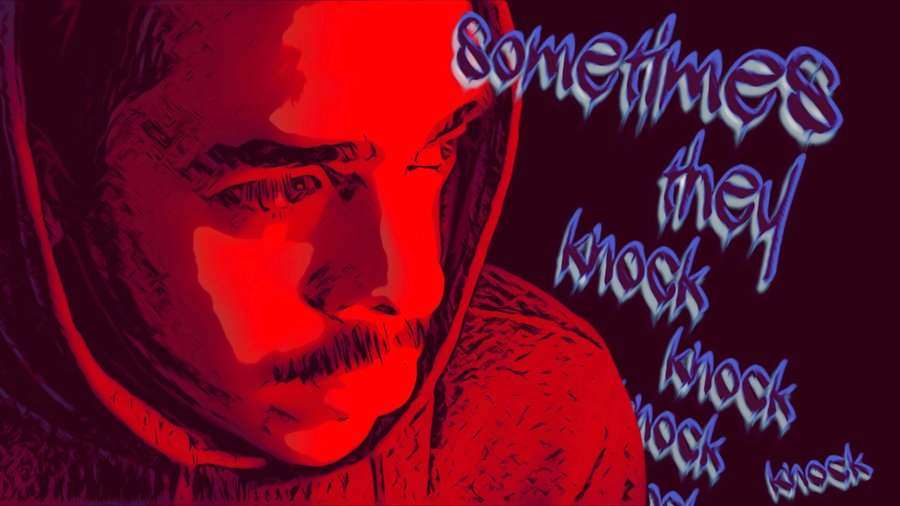
A code only he can hear.
A life only he must live.
Directed by Matt Binetti
Racine Video Production Workshop
Sometimes They Knock follows Alex, a young man navigating the fractured landscape of a mental health diagnosis. As he moves through distorted memories, fevered hallucinations, and haunting visions, a documentary filmmaker captures his story, searching for the human being behind the diagnosis. The film is a meditation on empathy: what does it mean to truly see another person, even when their reality looks nothing like your own? (Content advisory: adult language, self-harm, suicide references.)
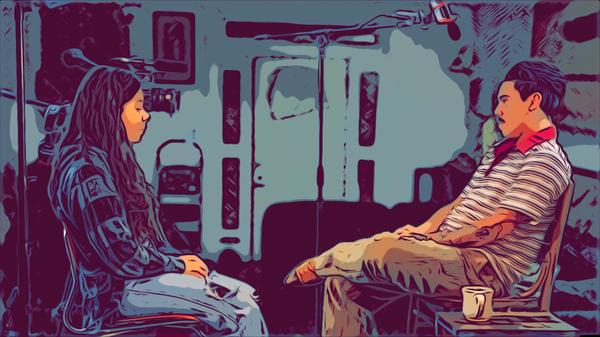
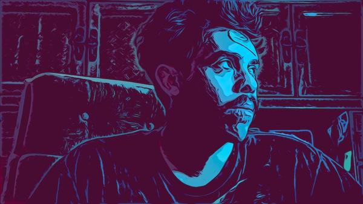
This film began with a moment of recognition: watching a stranger outside my workplace, lost in conversation with themselves, struggling with a locked door to a condemned building. In that moment, I realized how little I understood about their reality, their daily struggles, their inner world. That encounter sparked a question that became the foundation of this project: What is life truly like for someone navigating severe mental illness?
Sometimes They Knock is not a clinical portrait. It is an immersive, impressionistic journey into Alex's consciousness — a place where past and present blur, where voices and visions feel more real than the world outside, where a simple locked door can become an insurmountable barrier. My hope is that this film creates understanding where there was distance, empathy where there was fear. Mental health crises are unfolding on our streets, in our communities, every day.
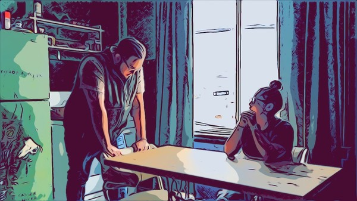
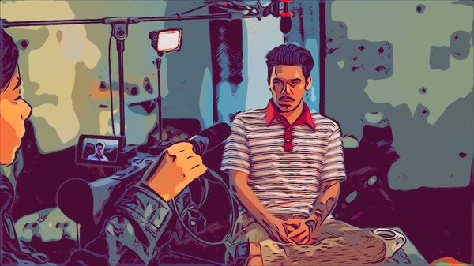
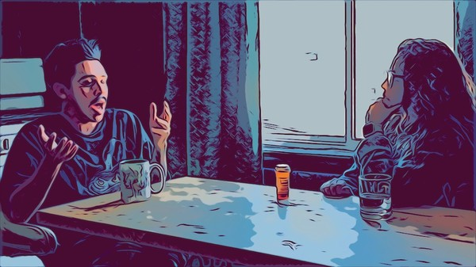
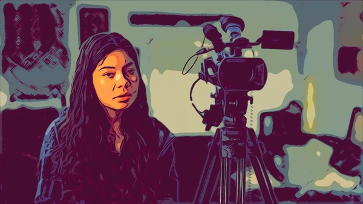
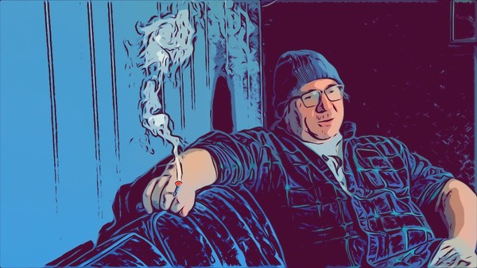
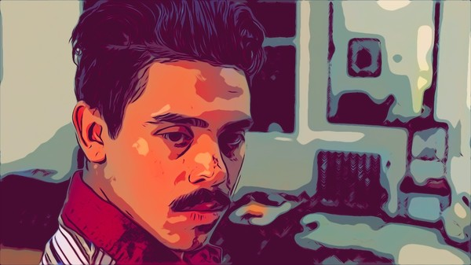
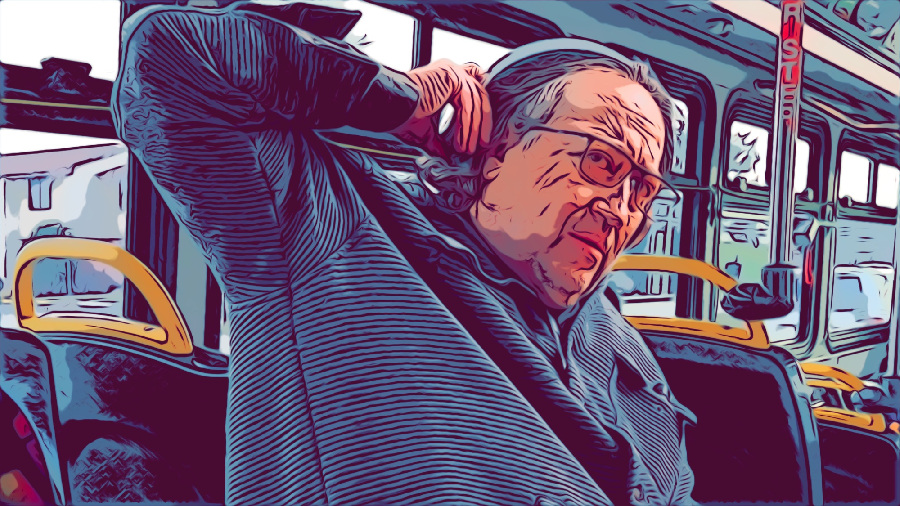
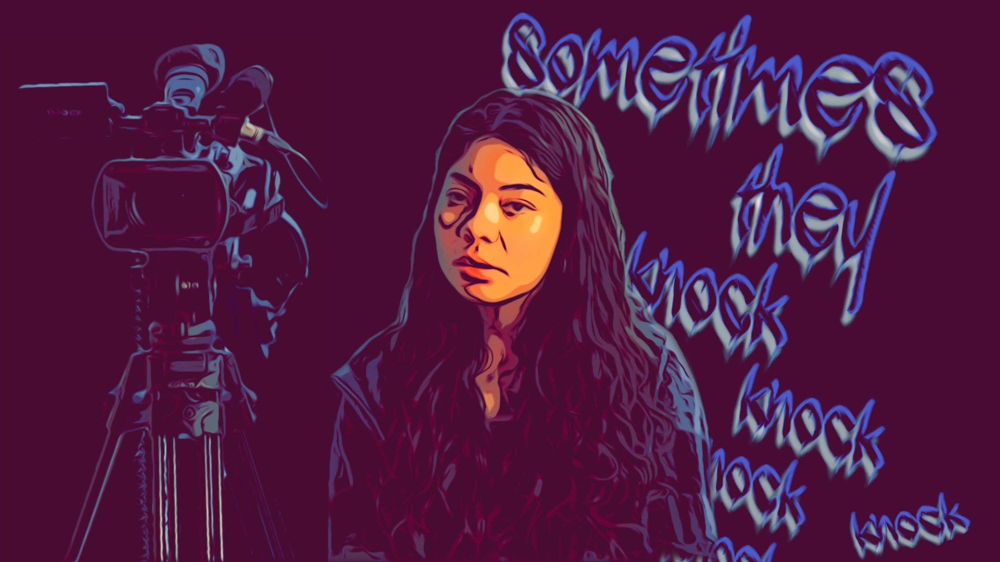
Matt Binetti is a Racine, Wisconsin–born filmmaker and the owner of Reservoir Video Co., a creative video production company known for crafting compelling visual stories for TV, web, and local media. With over 20 years of experience in non-fiction storytelling, Matt began his media journey while earning a B.A. in Communication Arts at the University of Wisconsin–Madison. He later worked in New York City producing reality and documentary content for networks including History Channel and HGTV before returning to Wisconsin. In 2017, Matt founded Reservoir Video Co. in Racine, where he leads a team focused on high-quality narrative and commercial video projects.
What do dreams, memories or hallucinations look and sound like? Cinema has always chased that question. Sometimes They Knock draws direct inspiration from Richard Linklater's Waking Life, which pioneered rotoscoping to blur the line between reality and reverie. Using green screen production and layered visual effects, the film transforms Alex's world into something familiar yet distorted, vivid yet unstable. The approach also freed the production to move fast and stay nimble, capturing raw, honest performances on an iPhone 16 Pro.
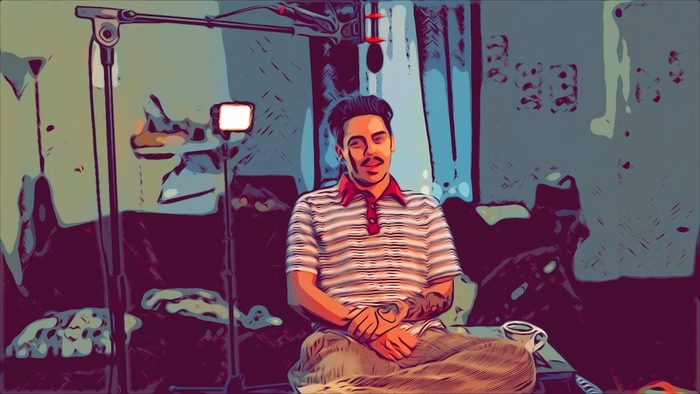 |
|
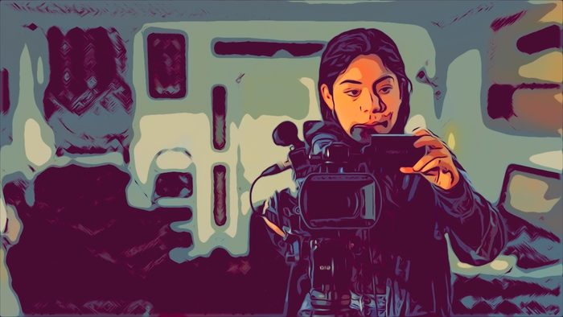 |
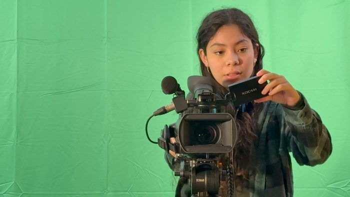 |
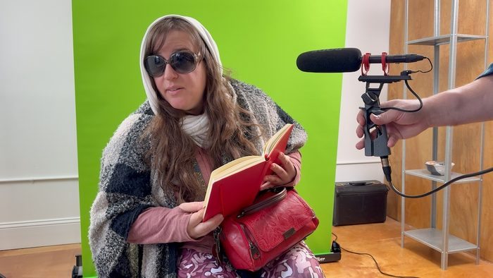 |
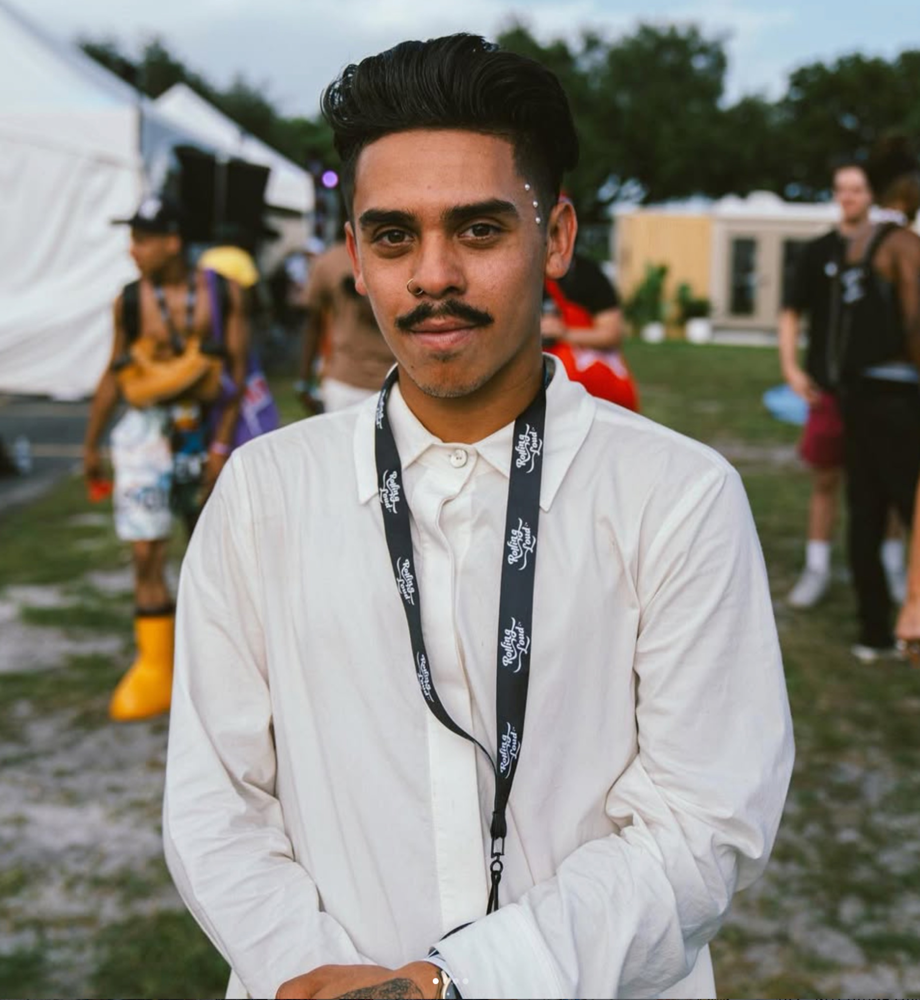
Nathan Michael — Alex
Known online as Nateflandersisdead, Nathan Michael is a multi-disciplinary creative based in the Kenosha–Chicago area. His work spans writing, filmmaking, and community-driven art, all rooted in a raw, introspective style. Through his platform he shares honest reflections on growth, sobriety, and the pursuit of minimizing distractions—bringing that same authenticity to his portrayal of Alex.
Sara Fortis — Filmmaker
Sara Fortis is a 22-year-old actress, singer, and dancer who has been performing since the age of twelve. A proud Mexican-American artist, she brings over a decade of experience in musical theater, acting, and dance to every project she touches. Sara is deeply committed to inspiring the next generation of artists and storytellers.
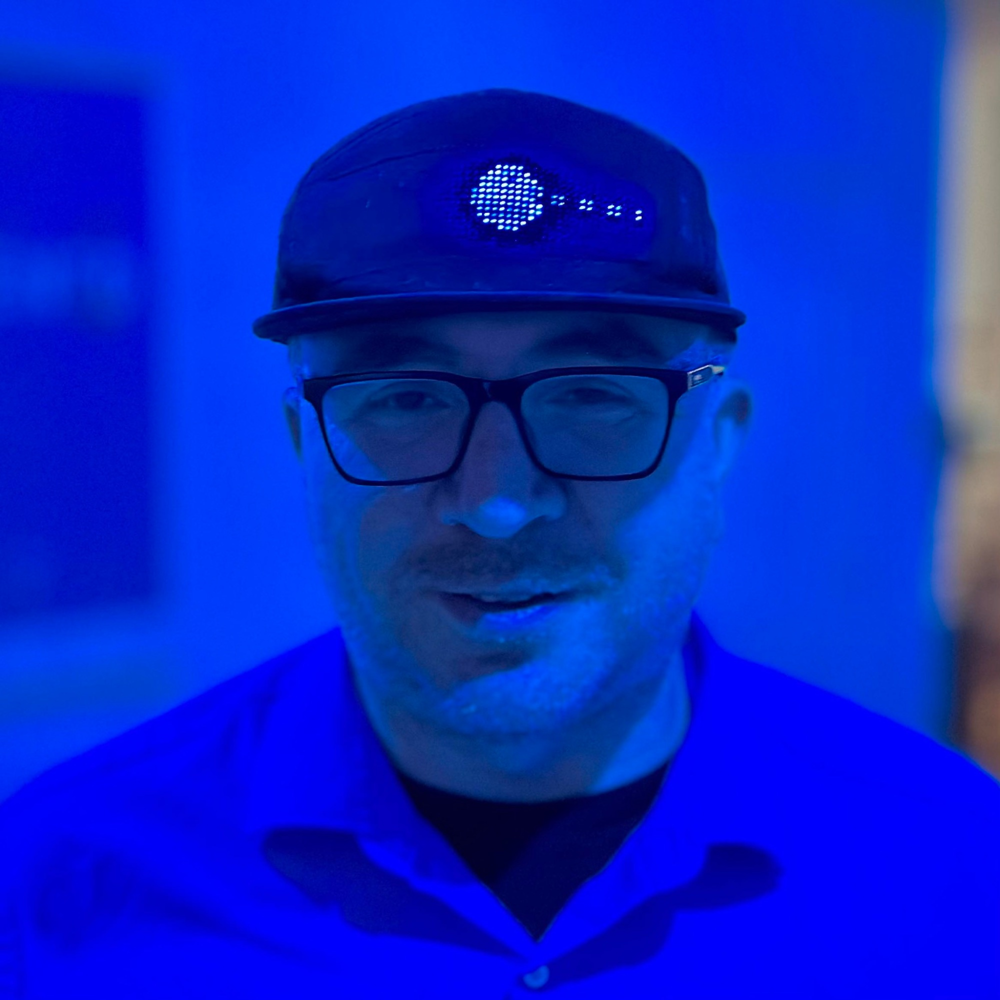
Jason Love — Producer
Jason Love is a Wisconsin-based filmmaker, media educator, and award-winning entertainer with more than twenty years of community-centered storytelling in Racine, WI. His work empowers local youth and emerging creatives through digital media, and his dedication to lifting voices in his community runs through every frame of Sometimes They Knock.
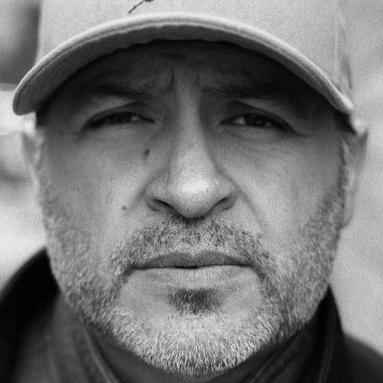
J. Anthony Ramos — Writer
J. Anthony Ramos is a Director, Writer, Producer and Actor whose parents migrated from Zacatecas, Mexico, was born and raised in Southeastern Wisconsin. His love of films and storytelling started at a young age, when his parents would often take him to the movies. The films that inspire him are from all genres, but he is particularly fond of Horror and Science Fiction films.
| TITLE | Sometimes They Knock |
| RUNTIME | 10 minutes |
| FORMAT | Short Film · 4K · 5.1 Surround · Digital Cinema Package |
| CAMERA | iPhone 16 Pro |
| COMPANY | Racine Video Production Workshop |
| PREMIERE | Milwaukee Film Festival — Spring 2026 |
Crew
Cast
Music
Special Thanks
This film was made possible through a grant
provided by United Way of Racine County
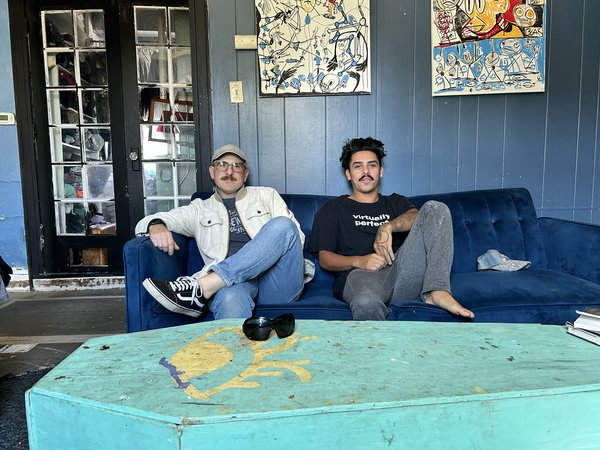
Matt and Nate
1 in 5 U.S. adults lives with a mental illness
— NAMI, 2024
Asking for help is a show of strength.
www.nami.org